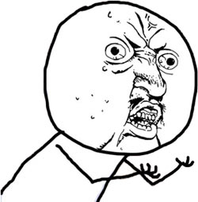

Better Web App Development through Tools
Junerey Casuga
IT Head | Zeresoft
Lead Developer | Tagcash.com
Craftsmanship is choosing tools well
Save yourself the pain. Add some power
- Remember team coordination before version control (Git)?
- Let's focus on development, not debugging
- How much time have you lost to syntax typos?

The tools I use for developing web apps
Your shell
- Make it powerful
- My faves: z script, tmux, server alias
Shell Augment
# Start an HTTP server from a directory
# Optionally specify the port
# Opens the web browser
function server() {
local port="${1:-8000}"
xdg-open "http://localhost:${port}/"
python -m SimpleHTTPServer "$port"
}
Your editor
- Learn it well
- A good editor is an onion application
- Keep peeling back layers to reveal more functionality
- More than any other tool, prioritize your familiarity with it
- My primary editors: Vim when I'm writing Ruby on Rails. Sublime Text for PHP and JavaScript
Realtime feedback
- live recompilation
- live reload
Testing
Author in whatever is most comfortable
A tool that helps you kickstart new projects, prescribing the best practices and tools to help you stay productive - Yeoman
Yeoman's 3 core tools
- Yo - the scaffolding tool from Yeoman
- Bower - the package management tool
- Grunt - the task runner tool
Summary
- Tools are your friends
- They increase your productivity
THANK YOU!
| twitter |
@junereytionX |
| www |
junereycasuga.github.io |
| github |
github.com/junereycasuga |